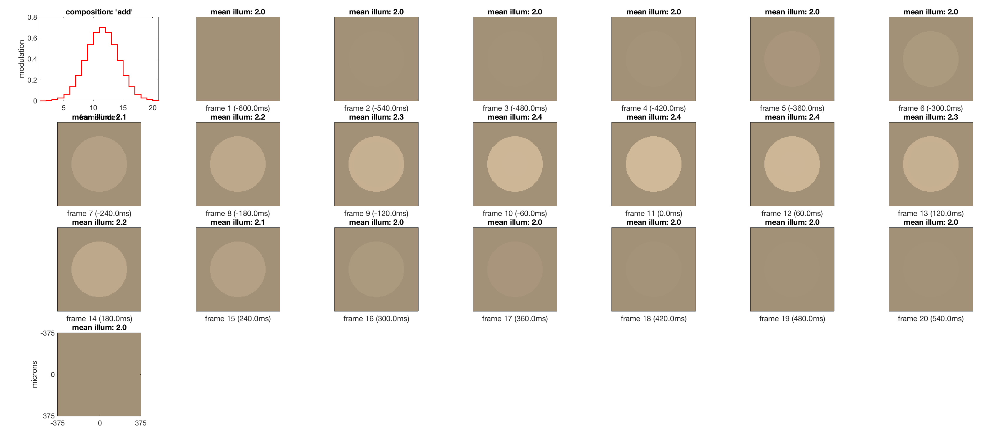
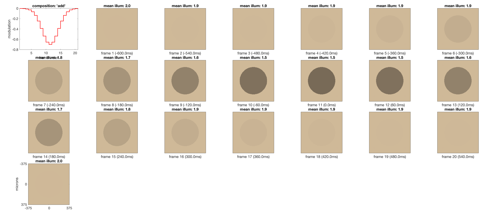
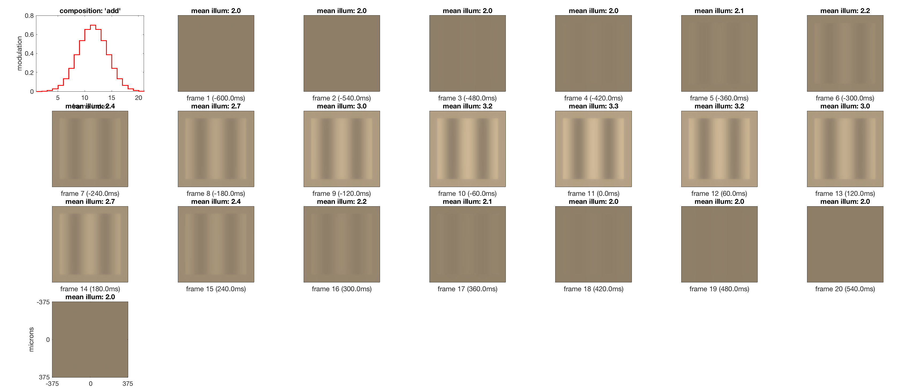
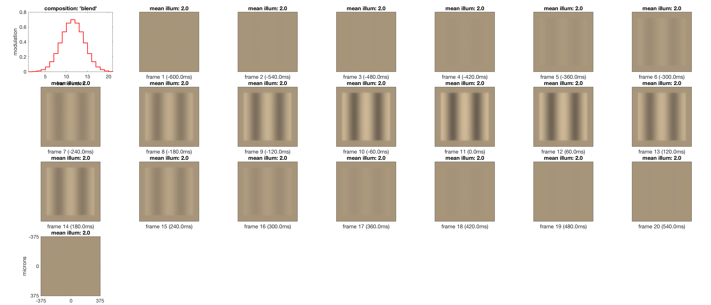
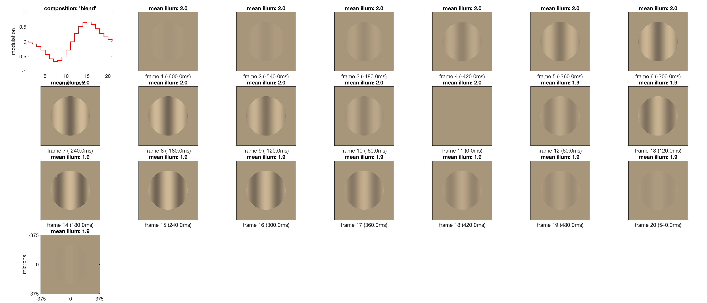

Contents
Generate a uniform scene
meanLuminance = 100;
uniformScene = sceneCreate('uniform equal photon', 128);
FOV = 2.0;
uniformScene = sceneSet(uniformScene, 'wAngular', FOV);
uniformScene = sceneSet(uniformScene, 'distance', 1.0);
uniformScene = sceneAdjustLuminance(uniformScene, meanLuminance);
gaborParams = struct(...
'freq', 2, ...
'contrast', 1.0, ...
'ph', 0, ...
'ang', 0, ...
'row', 128, ...
'col', 128, ...
'GaborFlag', false);
gaborScene = sceneCreate('harmonic', gaborParams);
gaborScene = sceneSet(gaborScene, 'wAngular', FOV);
gaborScene = sceneSet(gaborScene, 'distance', 1.0);
gaborScene = sceneAdjustLuminance(gaborScene, meanLuminance);
generating stimulus modulation functions
stimulusSamplingInterval = 60/1000;
oiTimeAxis = -0.6:stimulusSamplingInterval:0.6;
stimulusRampTau = 0.165;
modulationFunction1 = 0.7*exp(-0.5*(oiTimeAxis/stimulusRampTau).^2);
modulationFunction2 = -modulationFunction1;
modulationFunction3 = 0.7*(exp(-0.5*((oiTimeAxis-0.2)/stimulusRampTau).^2) - exp(-0.5*((oiTimeAxis+0.2)/stimulusRampTau).^2));
oi = oiCreate('human');
oi = oiCompute(oi, uniformScene);
oiBackground = oiCompute(oi, uniformScene);
oiModulated = oiBackground;
oiModulatedGabor = oiCompute(oi, gaborScene);
modulationRegion.radiusInMicrons = 250;
theOIsequence(1) = oiSequence(oiBackground, oiModulated, oiTimeAxis, modulationFunction1, ...
'composition', 'add', 'modulationRegion', modulationRegion);
theOIsequence(2) = oiSequence(oiBackground, oiModulated, oiTimeAxis, modulationFunction2, ...
'composition', 'add', 'modulationRegion', modulationRegion);
theOIsequence(3) = oiSequence(oiBackground, oiModulatedGabor, oiTimeAxis, modulationFunction1, ...
'composition', 'add');
theOIsequence(4) = oiSequence(oiBackground, oiModulatedGabor, oiTimeAxis, modulationFunction1, ...
'composition', 'blend');
theOIsequence(5) = oiSequence(oiBackground, oiModulatedGabor, oiTimeAxis, modulationFunction3, ...
'composition', 'blend', 'modulationRegion', modulationRegion);
for k = 1:numel(theOIsequence)
theOIsequence(k).visualize('format', 'montage');
end
    